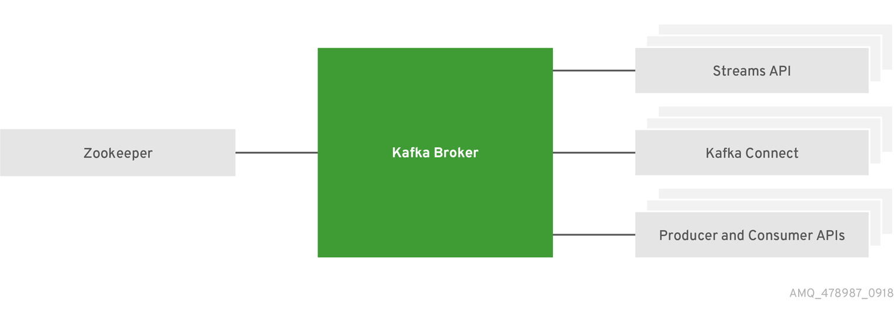

# groupadd kafka
# useradd -g kafka kafka
# passwd kafkaAMQ Streams
功能概述
AMQ Streams 基于 Strimzi(http://strimzi.io/) 社区产品，核心组件包括 Apache Kafka 和 Apache Zookeeper，是一个可大规模扩展，分布式和高性能的数据流平台。详细组件如下所示:

| 名称 | 功能 |
|---|---|
Zookeeper |
高可靠分布式协调器 |
Kafka Broker |
可靠消息传输代理，负责将生产者创建的消息传输给消费者 |
Kafka Connect |
流数据小工具，将 Kafka Broker 和其它系统通过 Connector 插件连接 |
Kafka Consumer and Producer APIs |
Java API，用来向 Kafka Broker 发送消息或从 Kafka Broker 接收消息 |
Kafka Streams API |
开发流处理应用 |
本地运行
安装与部署
1. 创建 kafka 用户和组
2. 创建 /opt/kafka 路径
# mkdir /opt/kafka3. 解压安装
# unzip amq-streams-1.0.0-bin.zip -d /opt/kafka4. 设定 /opt/kafka 组属关系
# chown -R kafka:kafka /opt/kafka/5. 创建 /var/lib/zookeeper，并设定组属关系
# mkdir /var/lib/zookeeper
# chown -R kafka:kafka /var/lib/zookeeper/6. 创建 /var/lib/kafka，并设定组属关系
# mkdir /var/lib/kafka
# chown -R kafka:kafka /var/lib/kafka/单节点运行
1. 切换到 kafka 用户
# su - kafka2. 编辑 /opt/kafka/config/zookeeper.properties，设定 dataDir
dataDir=/var/lib/zookeeper3. 启动 Zookeeper
$ /opt/kafka/bin/zookeeper-server-start.sh -daemon /opt/kafka/config/zookeeper.properties4. 确保 Zookeeper 运行
$ jcmd | grep zookeeper
12433 org.apache.zookeeper.server.quorum.QuorumPeerMain /opt/kafka/config/zookeeper.properties5. 编辑 /opt/kafka/config/server.properties，设定 log.dirs
log.dirs=/var/lib/kafka6. 启动 Kafka
$ /opt/kafka/bin/kafka-server-start.sh -daemon /opt/kafka/config/server.properties7. 确保 Kafka 运行
$ jcmd | grep kafka
12778 kafka.Kafka /opt/kafka/config/server.properties8. 向 my-topic 发送消息
$ /opt/kafka/bin/kafka-console-producer.sh --broker-list localhost:9092 --topic my-topic
Hello World Kafka9. 从 my-topic 接收消息
$ /opt/kafka/bin/kafka-console-consumer.sh --bootstrap-server localhost:9092 --topic my-topic --from-beginning
Hllo World Kafka10. 停止 Kafka
$ /opt/kafka/bin/kafka-server-stop.sh
$ /opt/kafka/bin/zookeeper-server-stop.shOpenShift 上部署 Kafka
集群部署
1. 下载安装脚本
# wget https://github.com/strimzi/strimzi-kafka-operator/releases/download/0.8.2/strimzi-0.8.2.zip2. 创建工程
# oc new-project streams3. 部署 Cluster Operator
# sed -i 's/namespace: .*/namespace: streams/' install/cluster-operator/*RoleBinding*.yaml
# oc apply -f install/cluster-operator
# oc apply -f examples/templates/cluster-operator4. 部署 Kafka cluster
# oc apply -f examples/kafka/kafka-persistent.yaml5. 部署 Kafka Connect
# oc apply -f examples/kafka-connect/kafka-connect.yaml6. 验证 Kafka cluster 启动状况
# oc get pods
NAME READY STATUS RESTARTS AGE
my-cluster-entity-operator-54457f4548-x8mvq 3/3 Running 1 32m
my-cluster-kafka-0 2/2 Running 1 34m
my-cluster-kafka-1 2/2 Running 1 34m
my-cluster-kafka-2 2/2 Running 1 34m
my-cluster-zookeeper-0 2/2 Running 0 36m
my-cluster-zookeeper-1 2/2 Running 0 36m
my-cluster-zookeeper-2 2/2 Running 0 36m
my-connect-cluster-connect-64669fb655-6dpzb 1/1 Running 0 22m
strimzi-cluster-operator-696658566-bfmbf 1/1 Running 0 43m部署测试
1. 发送消息到 my-topic
# oc run kafka-producer -ti --image=registry.access.redhat.com/amqstreams-1/amqstreams10-kafka-openshift:1.0.0 --rm=true --restart=Never -- bin/kafka-console-producer.sh --broker-list my-cluster-kafka-bootstrap:9092 --topic my-topic
>Hello World
>AMQ STREAMS
>Kafka2. 从 my-topic 接收消息
# oc run kafka-consumer -ti --image=registry.access.redhat.com/amqstreams-1/amqstreams10-kafka-openshift:1.0.0 --rm=true --restart=Never -- bin/kafka-console-consumer.sh --bootstrap-server my-cluster-kafka-bootstrap:9092 --topic my-topic --from-beginning
Hello World
AMQ STREAMS
Kafka**
**